Gallery / Couples
Couples
Love stories side by side — on benches, bikes, sofas and even a tree.

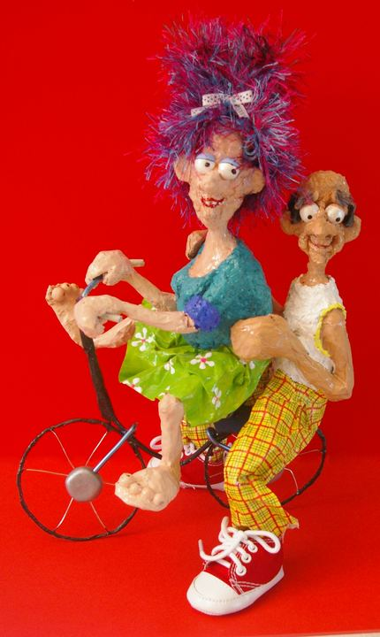

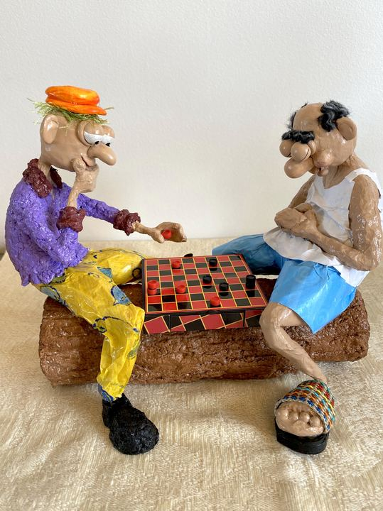
4 views
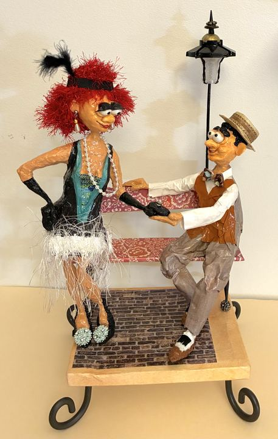
4 views
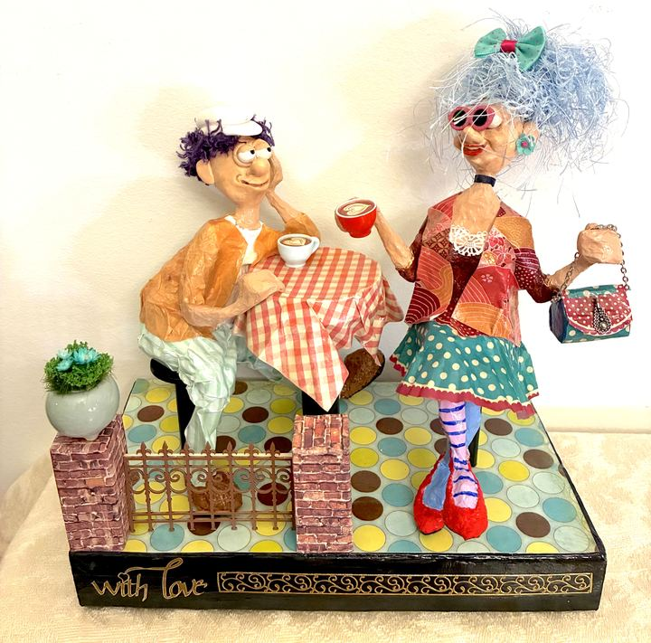

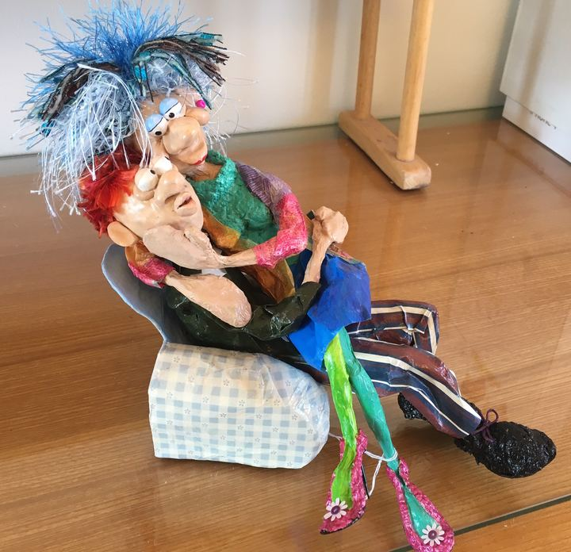

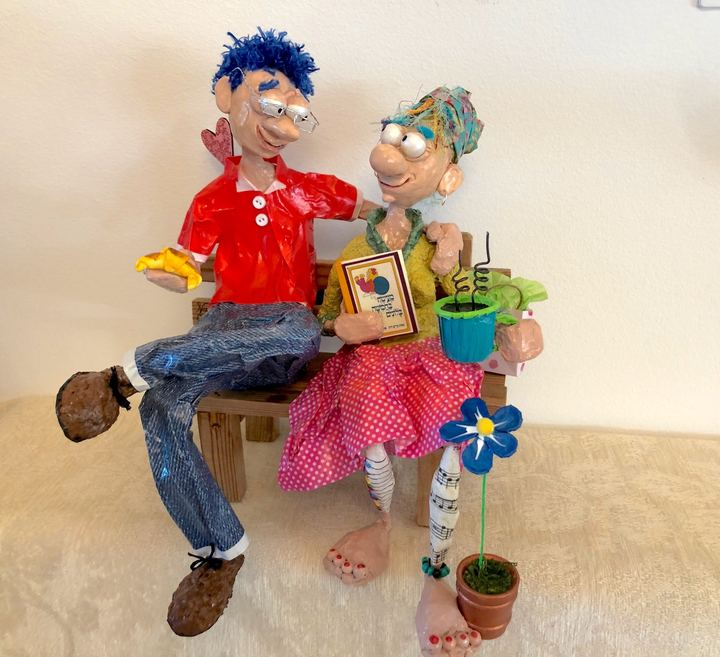
3 views 2 views
2 views
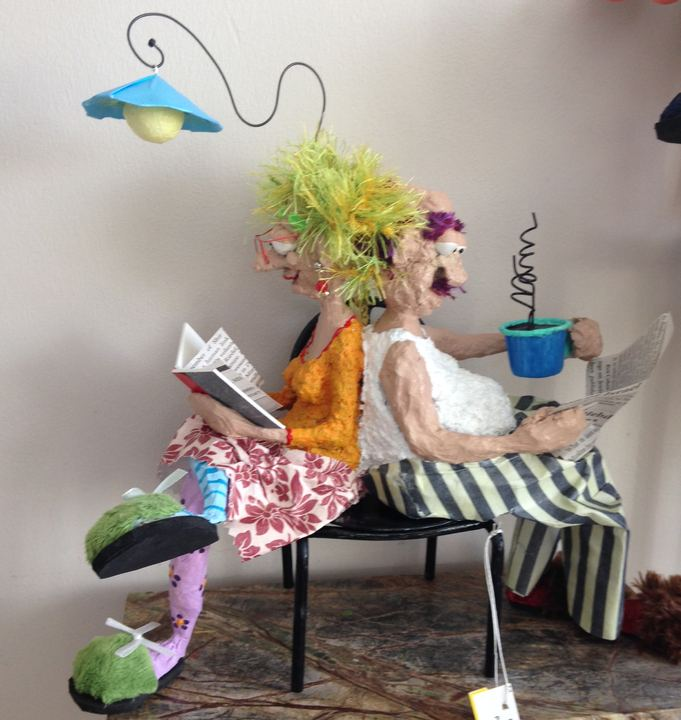

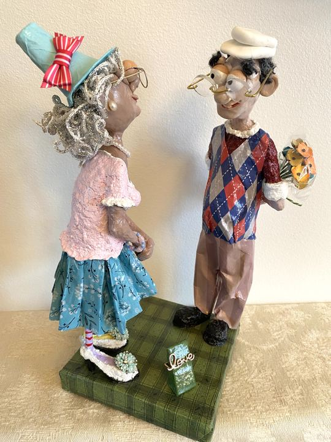

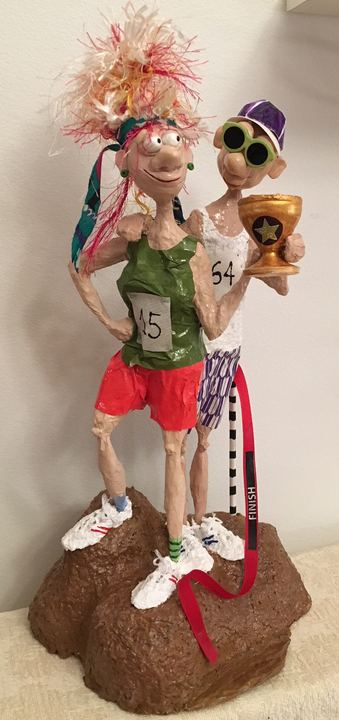

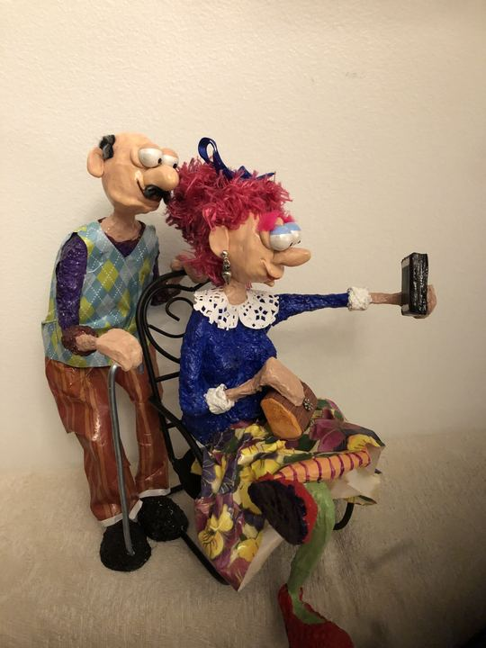
4 views
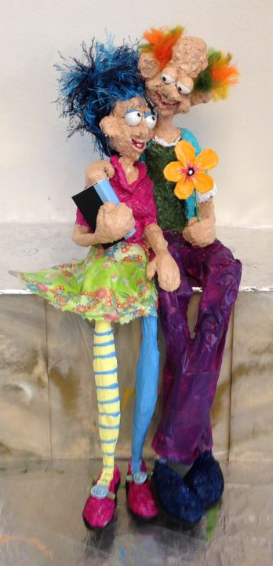

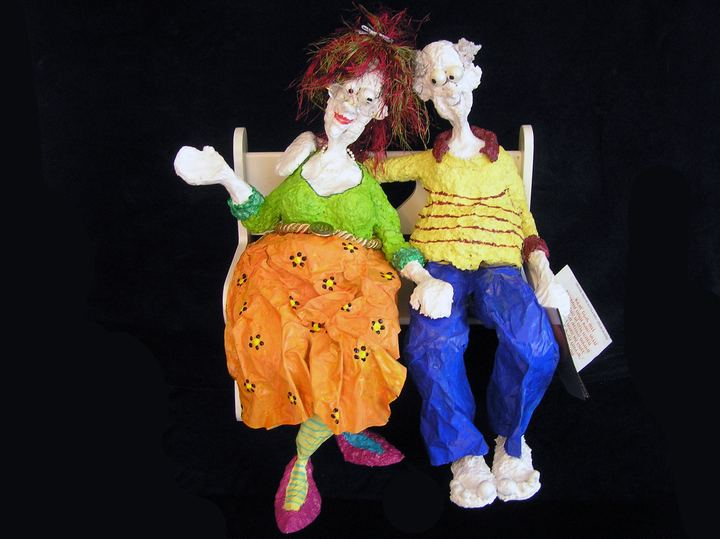


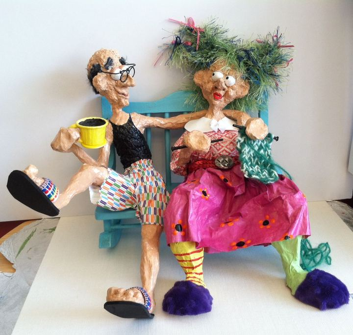


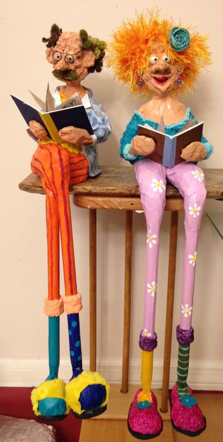

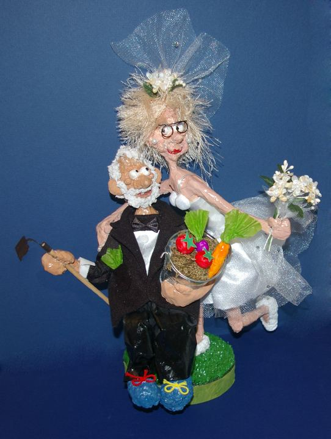

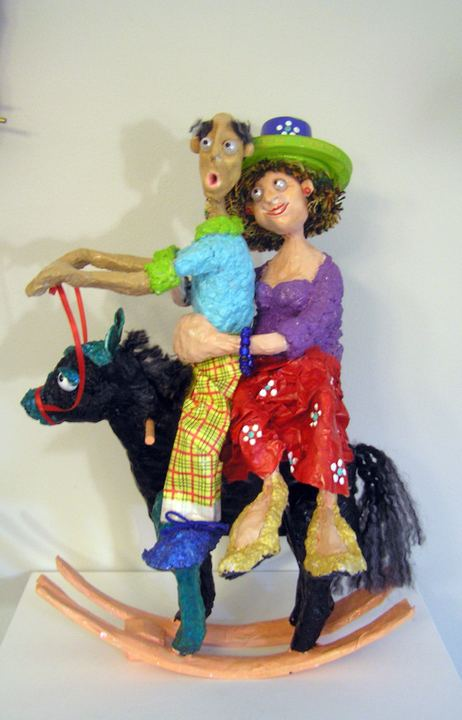

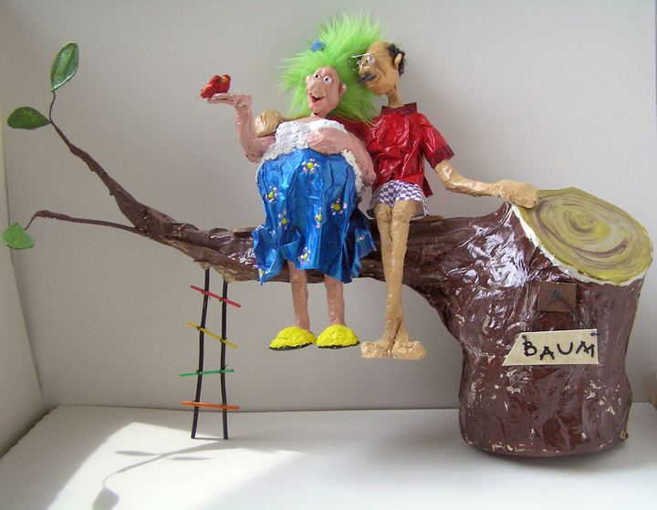

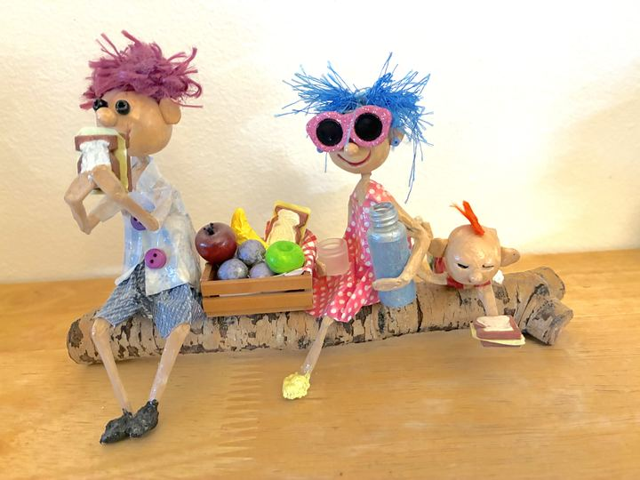

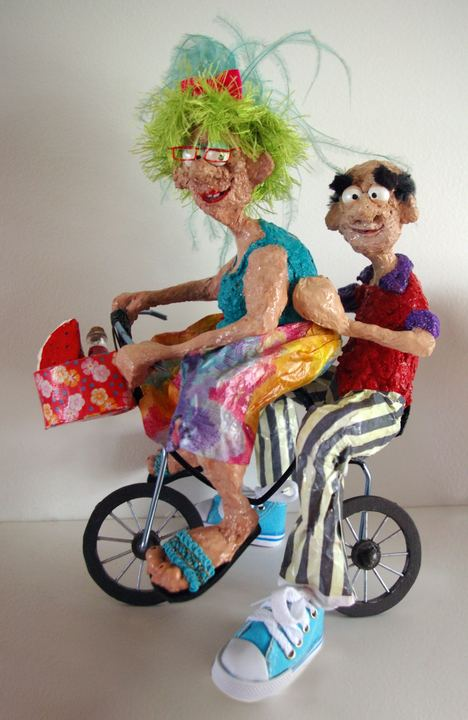

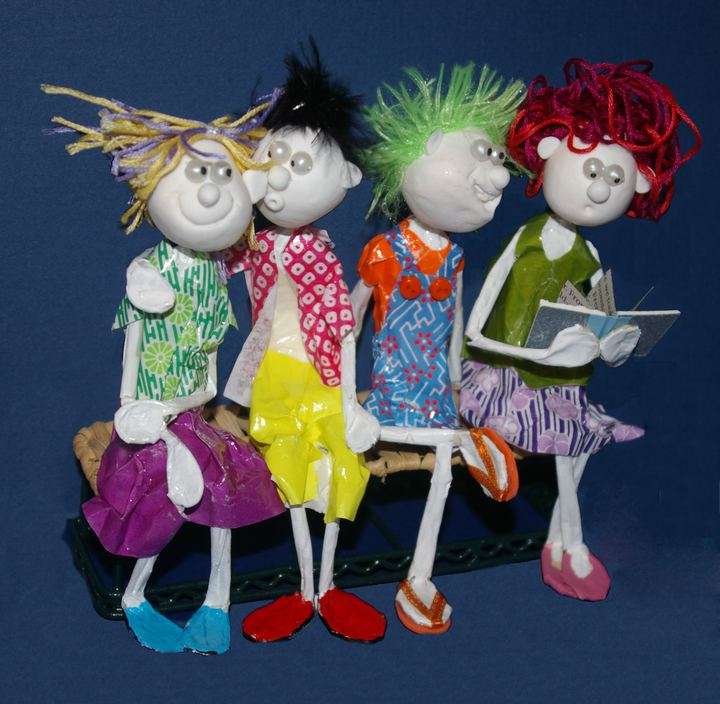

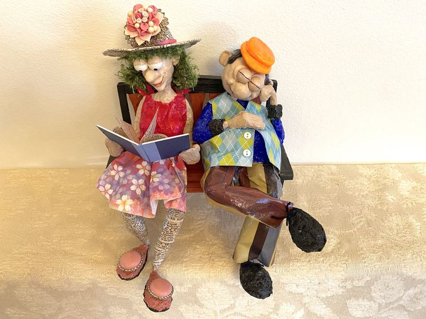
Love one of these? Most pieces are one-of-a-kind, but I’m happy to create something similar just for you.
Ask about a commission